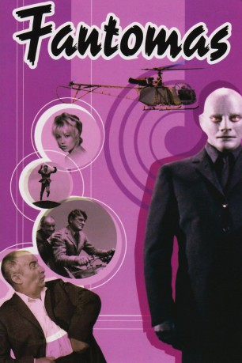

#3056 Fantomas 1
 
 IMDB-Wertung: 7.0 / 10
IMDB-Wertung: 7.0 / 10  Metascore: 0
Metascore: 0 
Als Mann mit tausend Masken narrt Verbrechergenie Fantomas die französische Öffentlichkeit. Kommissar Juve beruhigt die Bevölkerung in einer TV-Ansprache. Als Journalist Fandor in einem imaginären Interview Fantomas lächerlich macht, reagiert der auf seine Art und begeht in der Maske Juves und Fandors mehrere Verbrechen. Der Kommissar und der Journalist landen hinter Gittern, wo sie Fantomas persönlich befreit. Juve und Fandor drehen den Spieß um und jagen Fantomas, der in einem Flugboot entkommt.
Jahr: 1964
Dauer: 104 Minuten
FSK: 12
Land: Frankreich Studio: 20th Century Fox Film de MexicoTonspuren:
Untertitel: Deutsch,
Auflösung: 1080p (1920x816) Größe: 9850 MB
Genre: Komödie, Abenteuer, Fantasy, Krimi
Regisseur: André Hunebelle
Drehbuch: Pierre Souvestre, Marcel Allain, Jean Halain, Pierre Foucaud, Jean Halain
Soundtrack: Michel Magne
Darsteller:
 Jean Marais als Fantômas / Fandor
Jean Marais als Fantômas / Fandor Louis de Funès als Commissaire Juve
Louis de Funès als Commissaire Juve Mylène Demongeot als Hélène
Mylène Demongeot als Hélène Jacques Dynam als Inspecteur Bertrand
Jacques Dynam als Inspecteur Bertrand Robert Dalban als Le directeur du journal
Robert Dalban als Le directeur du journal- Marie-Hélène Arnaud als Lady Beltham
- Anne-Marie Peysson als La speakerine
- Christian Toma als Un inspecteur
- Michel Duplaix als Un inspecteur
- Andrée Tainsy als L'habilleuse
- Hugues Wanner als
- Henri Attal als Un garde du corps / Bodyguard
- Jacques Berger als
- Pierre Collet als Un agent
- Henri Guégan als
- Rudy Lenoir als Le recepionniste / Le gardien-chef
- Jacques de Lanoye als
- Jean Minisini als Un homme de main de Fantômas
- Bernard Musson als Un agent de police
- Dominique Zardi als Un garde du corps / Bodyguard
- Georges Adet als Un témoin , uncredited
- Jean-Louis Allibert als (uncredited
- Marc Arian als Un invité et un joueur , uncredited
- André Badin als Le vendeur de la bijouterie , uncredited
- Charles Bayard als Le militaire au monocle , uncredited
- Jean Blancheur als Un témoin , uncredited
- Jean-Paul Blonday als Un invité , uncredited
- Philippe Castelli als L'agent en faction , uncredited
- Michel Charrel als Un homme de main de Fantômas , uncredited
- Yvan Chiffre als Un homme de main de Fantômas , uncredited
- Henri Coutet als Un témoin , uncredited
- Albert Domergue als Un invité , uncredited
- Gabrielle Doulcet als La dame témoin , uncredited
- André Dumas als (uncredited
- Marius Gaidon als L'agent au commissariat , uncredited
- André Hunebelle als (uncredited
- Gaston Meunier als Le joueur au casino , uncredited
 Raymond Pellegrin als Fantômas , uncredited
Raymond Pellegrin als Fantômas , uncredited
Datei: X:\Person\Louis de Funès\Fantomas 1 (1964, FSK12, 1920x816).mkv seit 20.01.2016
Festplatte: HD Collection-7+mehr(A-Z)+Person
 Es gibt insgesamt 33 Filme in der Gruppe 'Person\Louis de Funès'
Es gibt insgesamt 33 Filme in der Gruppe 'Person\Louis de Funès'